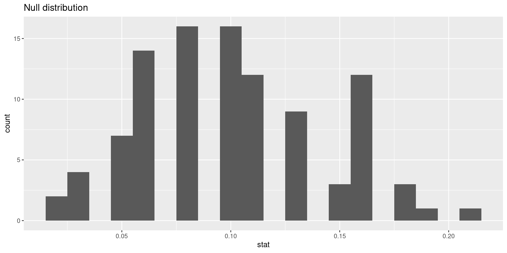
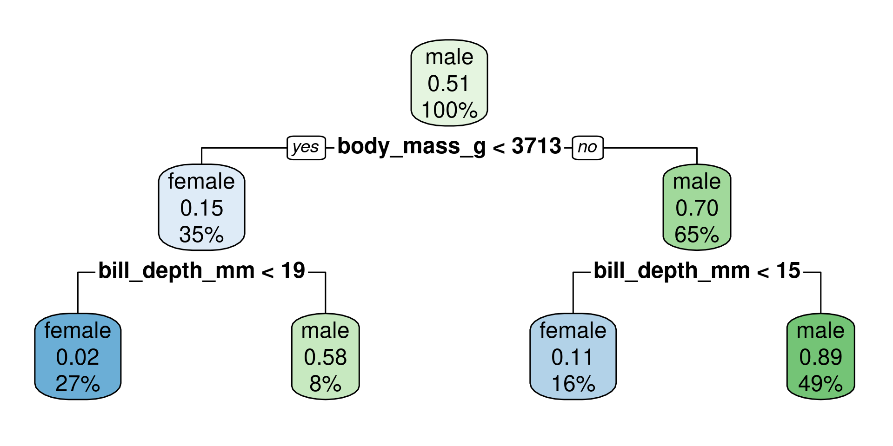

W#10: Performance Metrics, Cross validation, Hypothesis testing, Math: Probability
Hypothesis testing
Large part of the content adapted from http://datasciencebox.org.
Organ donors
People providing an organ for donation sometimes seek the help of a special “medical consultant”. These consultants assist the patient in all aspects of the surgery, with the goal of reducing the possibility of complications during the medical procedure and recovery. Patients might choose a consultant based in part on the historical complication rate of the consultant’s clients.
One consultant tried to attract patients by noting that the average complication rate for liver donor surgeries in the US is about 10%, but her clients have only had 3 complications in the 62 liver donor surgeries she has facilitated. She claims this is strong evidence that her work meaningfully contributes to reducing complications (and therefore she should be hired!).
Data
Parameter vs. statistic
A parameter for a hypothesis test is the “true” value of interest. We typically estimate the parameter using a sample statistic as a point estimate.
\(p\): true rate of complication, here 0.1 (10% complication rate in US)
\(\hat{p}\): rate of complication in the sample = \(\frac{3}{62}\) = 0.048
Correlation vs. causation
Is it possible to assess the consultant’s claim using the data?
No. The claim is: There is a causal connection, but the data are observational. For example, maybe patients who can afford a medical consultant can afford better medical care, which can also lead to a lower complication rate (for example).
While it is not possible to assess the causal claim, it is still possible to test for an association using these data. For this question we ask, could the low complication rate of \(\hat{p}\) = 0.048 be due to chance?
Two claims
- Null hypothesis: “There is nothing going on”
Complication rate for this consultant is no different than the US average of 10%
- Alternative hypothesis: “There is something going on”
Complication rate for this consultant is lower than the US average of 10%
Hypothesis testing as a court trial
Null hypothesis, \(H_0\): Defendant is innocent
Alternative hypothesis, \(H_A\): Defendant is guilty
Present the evidence: Collect data
Judge the evidence: “Could these data plausibly have happened by chance if the null hypothesis were true?”
- Yes: Fail to reject \(H_0\)
- No: Reject \(H_0\)
Hypothesis testing framework
Start with a null hypothesis, \(H_0\), that represents the status quo
Set an alternative hypothesis, \(H_A\), that represents the research question, i.e. what we are testing for
Conduct a hypothesis test under the assumption that the null hypothesis is true and calculate a p-value.
Definition: Probability of observed or more extreme outcome given that the null hypothesis is true.- if the test results suggest that the data do not provide convincing evidence for the alternative hypothesis, stick with the null hypothesis
- if they do, then reject the null hypothesis in favor of the alternative
Setting the hypotheses
Which of the following is the correct set of hypotheses for the claim that the consultant has lower complication rates?
\(H_0: p = 0.10\); \(H_A: p \ne 0.10\)
\(H_0: p = 0.10\); \(H_A: p > 0.10\)
\(H_0: p = 0.10\); \(H_A: p < 0.10\)
\(H_0: \hat{p} = 0.10\); \(H_A: \hat{p} \ne 0.10\)
\(H_0: \hat{p} = 0.10\); \(H_A: \hat{p} > 0.10\)
\(H_0: \hat{p} = 0.10\); \(H_A: \hat{p} < 0.10\)
Correct is c. Hypotheses are about the true rate of complication \(p\) not the observed ones \(\hat{p}\)
Simulating the null distribution
Since \(H_0: p = 0.10\), we need to simulate a null distribution where the probability of success (complication) for each trial (patient) is 0.10.
How should we simulate the null distribution for this study using a bag of chips?
- How many chips? For example 10 which makes 10% choices possible
- How many colors? 2
- What should colors represent? “complication”, “no complication”
- How many draws? 62 as the data
- With replacement or without replacement? With replacement
When sampling from the null distribution, what would be the expected proportion of “complications”? 0.1
Simulation!
set.seed(1234)
outcomes <- c("complication", "no complication")
sim1 <- sample(outcomes, size = 62, prob = c(0.1, 0.9), replace = TRUE)
sim1 [1] "no complication" "no complication" "no complication" "no complication"
[5] "no complication" "no complication" "no complication" "no complication"
[9] "no complication" "no complication" "no complication" "no complication"
[13] "no complication" "complication" "no complication" "no complication"
[17] "no complication" "no complication" "no complication" "no complication"
[21] "no complication" "no complication" "no complication" "no complication"
[25] "no complication" "no complication" "no complication" "complication"
[29] "no complication" "no complication" "no complication" "no complication"
[33] "no complication" "no complication" "no complication" "no complication"
[37] "no complication" "no complication" "complication" "no complication"
[41] "no complication" "no complication" "no complication" "no complication"
[45] "no complication" "no complication" "no complication" "no complication"
[49] "no complication" "no complication" "no complication" "no complication"
[53] "no complication" "no complication" "no complication" "no complication"
[57] "no complication" "no complication" "no complication" "no complication"
[61] "no complication" "no complication"[1] 0.0483871Oh OK, this was is pretty close to the consultant’s rate. But maybe it was a rare event?
More simulation!
Automating with tidymodels1
library(tidymodels)
set.seed(10)
null_dist <- organ_donor |>
specify(response = outcome, success = "complication") |>
hypothesize(null = "point",
p = c("complication" = 0.10, "no complication" = 0.90)) |>
generate(reps = 100, type = "draw") |>
calculate(stat = "prop")
null_distResponse: outcome (factor)
Null Hypothesis: point
# A tibble: 100 × 2
replicate stat
<int> <dbl>
1 1 0.0323
2 2 0.0645
3 3 0.0968
4 4 0.0161
5 5 0.161
6 6 0.0968
7 7 0.0645
8 8 0.129
9 9 0.161
10 10 0.0968
# ℹ 90 more rowsVisualizing the null distribution
Calculating the p-value, visually
What is the p-value:1 How often was the simulated sample proportion at least as extreme as the observed sample proportion?
Calculating the p-value, directly
This is the fraction of simulations where complications was equal or below 0.0483871.
Significance level
A significance level \(\alpha\) is a threshold we make up to make our judgment about the plausibility of the null hypothesis being true given the observed data.
We often use \(\alpha = 0.05 = 5\%\) as the cutoff for whether the p-value is low enough that the data are unlikely to have come from the null model.
If p-value < \(\alpha\), reject \(H_0\) in favor of \(H_A\): The data provide convincing evidence for the alternative hypothesis.
If p-value > \(\alpha\), fail to reject \(H_0\) in favor of \(H_A\): The data do not provide convincing evidence for the alternative hypothesis.
What is the conclusion of the hypothesis test?
Since the p-value is greater than the significance level, we fail to reject the null hypothesis. These data do not provide convincing evidence that this consultant incurs a lower complication rate than the 10% overall US complication rate.
100 simulations is not sufficient
- We simulate 15,000 times to get an accurate distribution.
null_dist <- organ_donor |>
specify(response = outcome, success = "complication") |>
hypothesize(null = "point",
p = c("complication" = 0.10, "no complication" = 0.90)) |>
generate(reps = 15000, type = "simulate") |>
calculate(stat = "prop")
ggplot(data = null_dist, mapping = aes(x = stat)) +
geom_histogram(binwidth = 0.01) +
geom_vline(xintercept = 3/62, color = "red")Our more robust p-value
For the null distribution with 15,000 simulations
# A tibble: 1 × 1
p_value
<dbl>
1 0.125Oh OK, our fist p-value was much more borderline in favor of the alternative hypothesis.
p-value in model outputs
Model output for a linear model with palmer penguins.
# A tibble: 2 × 5
term estimate std.error statistic p.value
<chr> <dbl> <dbl> <dbl> <dbl>
1 (Intercept) 55.1 2.52 21.9 6.91e-67
2 bill_depth_mm -0.650 0.146 -4.46 1.12e- 5Model output for a logistic regression model with email from openintro
library(openintro)
logistic_reg() |> set_engine("glm") |>
fit(spam ~ from + cc, data = email, family = "binomial") |> tidy()# A tibble: 3 × 5
term estimate std.error statistic p.value
<chr> <dbl> <dbl> <dbl> <dbl>
1 (Intercept) 13.6 309. 0.0439 0.965
2 from1 -15.8 309. -0.0513 0.959
3 cc 0.00423 0.0193 0.220 0.826What do the p-values mean? What is the null hypothesis?
Null-Hypothesis: There is no relationship between the predictor variable and the response variable, that means that the coefficient is equal to zero.
The smaller the p-value, the more evidence for rejecting the hypothesis that there is no effect.
xkcd on p-values


- Significance levels are fairly arbitrary. Sometimes they are used (wrongly) as definitive judgments
- They can even be used to do p-hacking: Searching for “significant” effects in observational data
- In parts of science it has become a “gamed” performance metric.
- The p-value says nothing about effect size!
p-value misinterpretation
p-values do not measure1
- the probability that the studied hypothesis is true
- the probability that the data were produced by random chance alone
- the size of an effect
- the importance of a result” or “evidence regarding a model or hypothesis” (it is only against the null hypothesis).
Correct:
The p-value is the probability of obtaining test results at least as extreme as the result actually observed, under the assumption that the null hypothesis is correct.
p-values and significance tests, when properly applied and interpreted, increase the rigor of the conclusions drawn from data.2
Classification: Compare logistic regression and decision tree
Purpose of the section
- Go again through the modeling workflow (with
tidymodels) and see that large parts are identical - Look again at the coefficients of a logistic regression model
- Learn the basic idea of a decision tree (you will not learn the details here)
- Do the classification with both models and compare the confusion matrices
Specify recipe and models
For both logistic regression and decision tree:
# A tibble: 344 × 8
species island bill_length_mm bill_depth_mm flipper_length_mm body_mass_g
<fct> <fct> <dbl> <dbl> <int> <int>
1 Adelie Torgersen 39.1 18.7 181 3750
2 Adelie Torgersen 39.5 17.4 186 3800
3 Adelie Torgersen 40.3 18 195 3250
4 Adelie Torgersen NA NA NA NA
5 Adelie Torgersen 36.7 19.3 193 3450
6 Adelie Torgersen 39.3 20.6 190 3650
7 Adelie Torgersen 38.9 17.8 181 3625
8 Adelie Torgersen 39.2 19.6 195 4675
9 Adelie Torgersen 34.1 18.1 193 3475
10 Adelie Torgersen 42 20.2 190 4250
# ℹ 334 more rows
# ℹ 2 more variables: sex <fct>, year <int>- We specify a recipe to predict
sexwith all available variables inpenguins- Typically, more pre-processing steps are specified here, but we are mostly fine
Logistic Regression
peng_logreg specifies to fit with glm (generalized linear model from base R)
Split and fit
For logistic regression and decision tree:
Split into test and training data
Look at fitted logistic regression
# A tibble: 9 × 5
term estimate std.error statistic p.value
<chr> <dbl> <dbl> <dbl> <dbl>
1 (Intercept) -79.2 14.3 -5.56 0.0000000276
2 speciesChinstrap -6.67 1.98 -3.37 0.000755
3 speciesGentoo -8.03 3.22 -2.49 0.0127
4 islandDream -0.00898 0.950 -0.00945 0.992
5 islandTorgersen -0.518 1.09 -0.477 0.633
6 bill_length_mm 0.539 0.149 3.62 0.000300
7 bill_depth_mm 1.58 0.416 3.79 0.000152
8 flipper_length_mm 0.0429 0.0548 0.782 0.434
9 body_mass_g 0.00578 0.00129 4.47 0.00000772 - What do the categorical predictors tell us? Which are signigficant?
- What do the numerical predictors tell us? Which are signigficant?
- Why is the coefficient for
body_mass_gso small, but highly significant?
Categorical predictors: We 3 species, 3 islands. So, we see 4 new variables, 2 for species and 2 for islands (the third is the reference category). Species are significant (p < 0.05), but not the island.
Numerical predictors: flipper_length_mm is insignificant, though its coefficient is larger than for body_mass_g. Reason: values of body_mass_g are larger than those of flipper_length_mm. Body mass differs by much more grams than flipper length differs by millimeters.
What is a decision tree?
══ Workflow [trained] ══════════════════════════════════════════════════════════
Preprocessor: Recipe
Model: decision_tree()
── Preprocessor ────────────────────────────────────────────────────────────────
1 Recipe Step
• step_rm()
── Model ───────────────────────────────────────────────────────────────────────
n=229 (10 observations deleted due to missingness)
node), split, n, loss, yval, (yprob)
* denotes terminal node
1) root 229 113 male (0.49344978 0.50655022)
2) body_mass_g< 3712.5 81 12 female (0.85185185 0.14814815)
4) bill_depth_mm< 18.55 62 1 female (0.98387097 0.01612903) *
5) bill_depth_mm>=18.55 19 8 male (0.42105263 0.57894737) *
3) body_mass_g>=3712.5 148 44 male (0.29729730 0.70270270)
6) bill_depth_mm< 14.85 36 4 female (0.88888889 0.11111111) *
7) bill_depth_mm>=14.85 112 12 male (0.10714286 0.89285714) *- A sequence of rules for yes/no decisions
- Selects variables and thresholds which separate the data to predict (here
sex) best - Further details are not the scope of this course
Show rules
We “dig out” the original fitted rpart-object from the workflow-object with peng_tree_fit$fit$fit$fit and plot it:
..y
0.02 when body_mass_g < 3713 & bill_depth_mm < 19
0.11 when body_mass_g >= 3713 & bill_depth_mm < 15
0.58 when body_mass_g < 3713 & bill_depth_mm >= 19
0.89 when body_mass_g >= 3713 & bill_depth_mm >= 15- The first two rules would predict
femalefor all observations - The last two rules would predict
malefor all observations
(The order of male and female is because sex is a factor with the first level female and the second level male. The probabilities are for the second level male.)
Visualize tree
How to read?
- The percentage is the fraction of the total cases in this group
- The probability-number is the fraction of observations which are male in the group
maleoffemaleand color would match the predicted outcome at this decision node
Make predictions for test data
- The logistic regression has more correct predictions.
- Warning:
conf_matis a cool function fromyardstickoftidymodels. Unfortunately, the confusion matrix is transposed (rows become columns) compared with Wikipedia:Confusion Matrix. Inconf_mat, the true conditions are in columns. The wikipedia convention is that these are the predicted conditions.
What is a model? Terminological confusion…
“Model” in Statistical Learning
We already had the difference between variable-based and agent-based models.
But even in the variable-based model setting of statistical learning, the term model can be more or less abstract:
- Very general: \(Y = f(X_1, \dots, X_m) + \varepsilon\) where \(Y\) is the response variable and \(X_i\) are features which we put in our model: the abstract and unknown function \(f\). \(\varepsilon\) is the error which can never explain and which we also usually do not know.
- More specific: The model \(f\) could already be of a specific type, like linear regression, logistic regression, or a decision tree or other functional forms. As this this need not be the real function we may call it assumed model \(\hat f\) For example a linear model \(\hat f(X_1, \dots, X_m) = \beta_0 + \beta_1 X_1 + \dots + \beta_m X_m + \varepsilon\). Now, the model has specified parameters which values are unknown.
More specific: Fitted model
- Fitted model: When we have a data set with values for \(Y, X_1, \dots, X_m\) we can fit values for the parameters \(\hat\beta_0, \dots, \hat\beta_m\) to the data. This is the fitted model \(\hat f\). This is called parameter estimation: We estimate \(\hat\beta_0, \dots, \hat\beta_m\) with the hope that they match the real values \(\hat\beta_0, \dots, \hat\beta_m\) and that the linear model \(\hat f\) matches the real function \(f\).
- Now we could specify further to fit a specific parameterized model with a specific algorithm, and a specific set of hyperparameters, and maybe more …
Sometimes model means only a certain aspect of all these, for example the formula like sex ~ bill_length_mm + bill_depth_mm + flipper_length_mm + body_mass_g + species + island
Take away: “Model” can mean things with very different granularity. That is OK because they are all related and all fit the definition of being a simplified representation of reality.
Be prepared to specify what you mean when you are talking about a model.
Regression: Compare linear regression and decision tree
Purpose of the section
- Go again through the modeling workflow (with
tidymodels) and see that large parts are identical - Look again at the coefficients of a linear model
- See how the decision tree looks like for a regression problem
- Compare the two most common performance measures for regression models: Root Mean Squared Error (RMSE) and R-squared
Specify recipe and models
- We specify a recipe to predict
body_mass_gwith all available variables inpenguinsand put it in a workflow- Typically, more pre-processing steps are specified here, but we are mostly fine
We can re-use the split and the training and test set.
Fit Regression Models
Look at fitted linear regression
# A tibble: 9 × 5
term estimate std.error statistic p.value
<chr> <dbl> <dbl> <dbl> <dbl>
1 (Intercept) -956. 683. -1.40 1.63e- 1
2 speciesChinstrap -244. 106. -2.31 2.17e- 2
3 speciesGentoo 1199. 169. 7.08 1.94e-11
4 islandDream 26.9 72.6 0.371 7.11e- 1
5 islandTorgersen -31.0 75.7 -0.410 6.82e- 1
6 bill_length_mm 19.4 8.15 2.37 1.84e- 2
7 bill_depth_mm 81.0 24.1 3.36 9.21e- 4
8 flipper_length_mm 11.6 3.54 3.28 1.19e- 3
9 sexmale 391. 58.9 6.64 2.38e-10- What do the categorical predictors tell us? Which are signigficant?
- What do the numerical predictors tell us? Which are signigficant?
- Why is the coefficient for
body_mass_gso small, but highly significant?
Categorical predictors: We 3 species, 3 islands and 2 sex. So, we see 5 new variables. Species and sex are significant, but not the island.
Numerical predictors: All 3 are significant.
Show rules
..y
3405 when species is Adelie or Chinstrap & sex is female
3999 when species is Adelie or Chinstrap & sex is male
4688 when species is Gentoo & sex is female
5495 when species is Gentoo & sex is male- For each terminal node a certain value is predicted (the mean of the remaining penguins)
Visualize tree

How to read?
- The percentage is the fraction of the total cases in this group
- The number is the predicted outcome (mean body mass) at this decision node
Make predictions for test data
Linear Regression
peng_linreg_pred <-
predict(peng_linreg_fit, peng_test) |>
bind_cols(peng_test)
peng_linreg_pred |>
select(.pred, body_mass_g, everything()) |>
slice(10*(1:10)) # show selected rows# A tibble: 10 × 9
.pred body_mass_g species island bill_length_mm bill_depth_mm
<dbl> <int> <fct> <fct> <dbl> <dbl>
1 3429. 3100 Adelie Dream 36 18.5
2 3262. 3050 Adelie Torgersen 35.9 16.6
3 4019. 4350 Adelie Dream 40.3 18.5
4 4000. 4475 Adelie Dream 37.5 18.5
5 4633. 4650 Gentoo Biscoe 40.9 13.7
6 5267. 5350 Gentoo Biscoe 48.7 15.7
7 5366. 5000 Gentoo Biscoe 46.4 15.6
8 4963. 5000 Gentoo Biscoe 50.5 15.2
9 3440. 3450 Chinstrap Dream 46.4 18.6
10 3363. 3500 Chinstrap Dream 45.5 17
# ℹ 3 more variables: flipper_length_mm <int>, sex <fct>, year <int>Decision Tree
peng_regtree_pred <-
predict(peng_regtree_fit, peng_test) |>
bind_cols(peng_test)
peng_regtree_pred |>
select(.pred, body_mass_g, species, sex) |>
slice(10*(1:10)) # show same selected rows# A tibble: 10 × 4
.pred body_mass_g species sex
<dbl> <int> <fct> <fct>
1 3405. 3100 Adelie female
2 3405. 3050 Adelie female
3 3999 4350 Adelie male
4 3999 4475 Adelie male
5 4688. 4650 Gentoo female
6 5495. 5350 Gentoo male
7 5495. 5000 Gentoo male
8 4688. 5000 Gentoo female
9 3405. 3450 Chinstrap female
10 3405. 3500 Chinstrap femaleRegression Model Performance Evaluation
R-squared: Percentage of variability in body_mass_g explained by the model
Linear Regression
Which model is better in prediction? Linear regression. The R-squared is higher.
Root mean squared error (RMSE)
RMSE is an alternative measure of performance.
\[\text{RMSE} = \sqrt{\frac{1}{n}\sum_{i = 1}^n (y_i - \hat{y}_i)^2}\]
where \(\hat{y}_i\) is the predicted value and \(y_i\) the true value.
(The name RMSE pretty much describes what the measure does.)
Should we prefer larger or lower RMSE?
Lower. The lower the error, the better the model’s prediction.
Notes:
- The common method to fit a linear model is the ordinary least squares (OLS) method
- That means the fitted parameters should deliver the lowest possible sum of squared errors (SSE) between predicted and observed values.
- Minimizing the sum of squared errors (SSE) is identical to minimizing the mean of squared errors (MSE) because it only adds the factor \(1/n\).
- Minimizing the mean of squared errors (MSE) is identical to minimizing the root mean of squared errors (RMSE) because the square root is strictly monotone function.
Conclusion: RMSE can be seen as a definition of the OLS optimization goal.
Interpreting RMSE
In contrast to R-squared, RMSE can only be interpreted with knowledge about the range and of the response variable.
The values of euftf range from 0 to 10
Make predictions for training data
Model performance
The wisdom of the crowd, “Diversity!”, and the Bias-Variance-Decomposition
Galton’s data
What is the weight of the meat of this ox?
library(readxl)
galton <- read_excel("data/galton_data.xlsx")
galton |> ggplot(aes(Estimate)) + geom_histogram(binwidth = 5) + geom_vline(xintercept = 1198, color = "green") +
geom_vline(xintercept = mean(galton$Estimate), color = "red")
787 estimates, true value 1198, mean 1196.7
RMSE Galton’s data
Describe the estimation game as a predictive model:
- All estimates are made to predict the same value: the truth.
- In contrast to the regression model, the estimate come from people and not from a regression formula.
- The truth is the same for all.
- In contrast to the regression model, the truth is one value and not a value for each prediction
MSE, Variance, and Bias of estimates
In a crowd estimation, \(n\) estimators delivered the estimates \(\hat{y}_1,\dots,\hat{y}_n\). Let us look at the following measures
\(\bar{y} = \frac{1}{n}\sum_{i = 1}^n \hat{y}_i^2\) is the mean estimate, it is the aggregated estimate of the crowd
\(\text{MSE} = \text{RMSE}^2 = \frac{1}{n}\sum_{i = 1}^n (\text{truth} - \hat{y}_i)^2\)
\(\text{Variance} = \frac{1}{n}\sum_{i = 1}^n (\hat{y}_i - \bar{y})^2\)
\(\text{Bias-squared} = (\bar{y} - \text{truth})^2\) which is the square difference between truth and mean estimate.
There is a mathematical relation (a math exercise to check):
\[\text{MSE} = \text{Bias-squared} + \text{Variance}\]
Testing for Galton’s data
\[\text{MSE} = \text{Bias-squared} + \text{Variance}\]
The diversity prediction theorem1
- MSE is a measure the average individuals error
- Bias-squared is a measure the collective error
- Variance is a measure for the diversity of estimates around the mean
The mathematical relation \[\text{MSE} = \text{Bias-squared} + \text{Variance}\] can be formulated as
Collective error = Individual error - Diversity
Interpretation: The higher the diversity the lower the collective error!
Why is this message a bit suggestive?
The mathematical relation \[\text{MSE} = \text{Bias-squared} + \text{Variance}\] can be formulated as
Collective error = Individual error - Diversity
Interpretation: The higher the diversity the lower the collective error!
- \(\text{MSE}\) and \(\text{Variance}\) are not independent!
- Activities to increase diversity (Variance) typically also increase the average individual error (MSE).
- For example, if we just add more random estimates with same mean but wild variance to our sample we increase both and do not gain any decrease of the collective error.
Accuracy for numerical estimate
- For binary classifiers accuracy has a simple definition: Fraction of correct classifications.
- It can be further informed by other more specific measures taken from the confusion matrix (sensitivity, specificity)
How about numerical estimators?
For example outcomes of estimation games, or linear regression models.
- Accuracy is for example measured by (R)MSE
- \(\text{MSE} = \text{Bias-squared} + \text{Variance}\) shows us that we can make a
bias-variance decomposition - That means some part of the error is a systematic (the bias) and another part due to random variation (the variance).
- Learn more about the bias-variance tradeoff in statistical learning independently! It is an important concept to understand predictive models.
2-d Accuracy: Trueness and Precision
According to ISO 5725-1 Standard: Accuracy (trueness and precision) of measurement methods and results - Part 1: General principles and definitions. there are two dimension of accuracy of numerical measurement.


What is a wise crowd?
Assume the dots are estimates. Which is a wise crowd?
- Of course, high trueness and high precision! But, …
- Focusing on the crowd being wise instead of its individuals: High trueness, low precision.